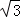
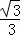
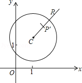

2015年北京市中考数学试题 · 数学解答题 第29题
29．（8分）（2015•北京）在平面直角坐标系xOy中，⊙C的半径为r，P是与圆心C不重合的点，点P关于⊙C的反称点的定义如下：若在射线CP上存在一点P′，满足CP+CP′=2r，则称P′为点P关于⊙C的反称点，如图为点P及其关于⊙C的反称点P′的示意图．
特别地，当点P′与圆心C重合时，规定CP′=0．
（1）当⊙O的半径为1时．
①分别判断点M（2，1），N（，0），T（1，

）关于⊙O的反称点是否存在？若存在，求其坐标；②点P在直线y=﹣x+2上，若点P关于⊙O的反称点P′存在，且点P′不在x轴上，求点P的横坐标的取值范围；
（2）⊙C的圆心在x轴上，半径为1，直线y=﹣

x+2与x轴、y轴分别交于点A，B，若线段AB上存在点P，使得点P关于⊙C的反称点P′在⊙C的内部，求圆心C的横坐标的取值范围．